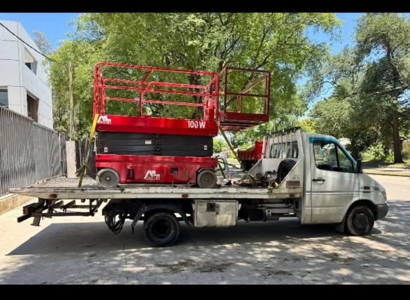
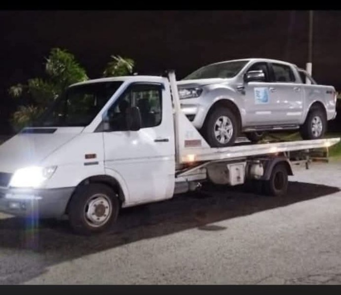
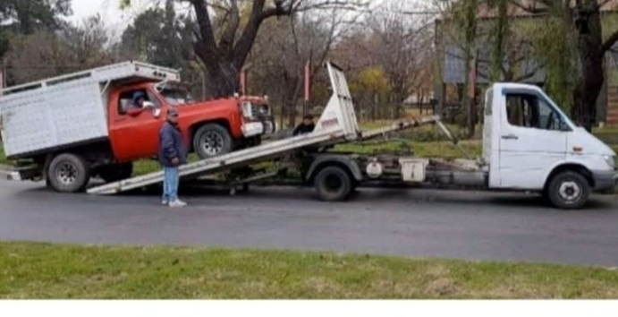
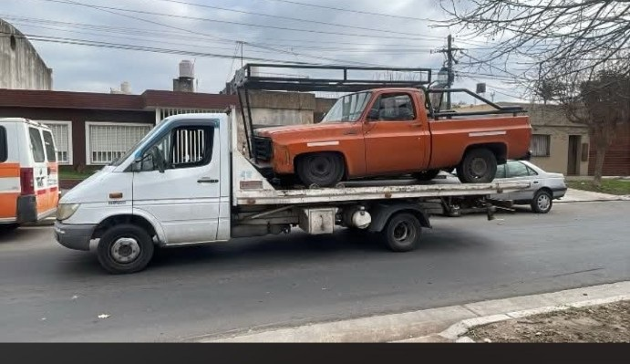
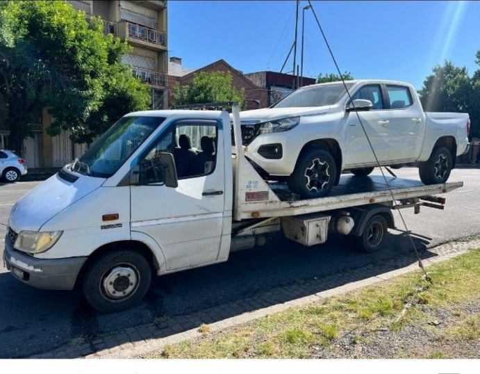
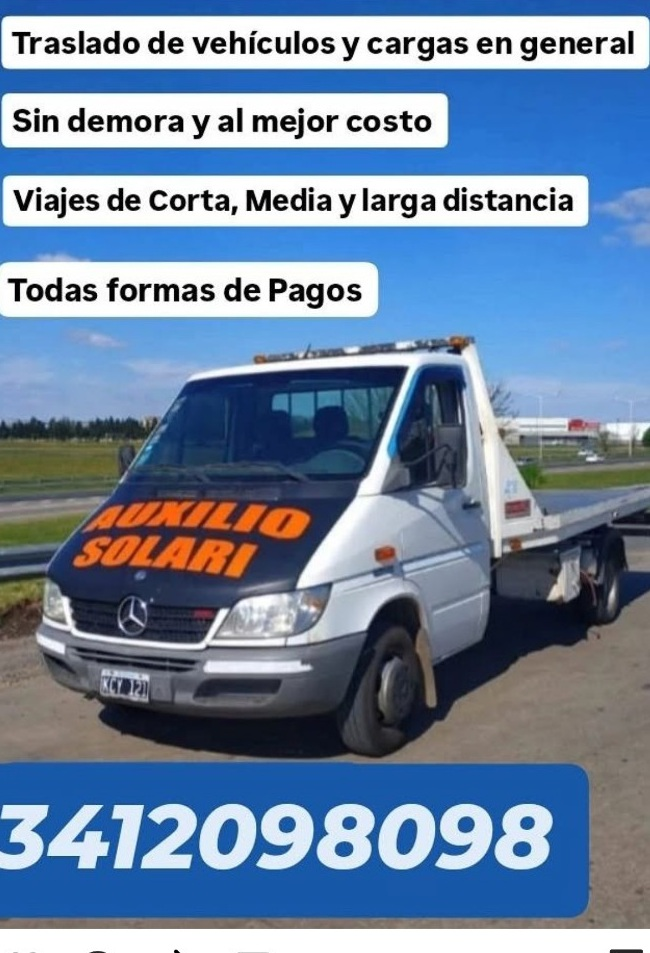

🚨
Grúa 24 Horas
Servicio de grúa para autos, motos y camionetas en Rosario y alrededores.
Ver servicio de grúa →Servicio de grúa, remolque y auxilio mecánico para autos, motos y camionetas. Atención en Rosario, alrededores y traslados de larga distancia.
Atención las 24 horas para vehículos, traslados y cargas. Elegí el servicio que necesitás para ver más información.
Servicio de grúa para autos, motos y camionetas en Rosario y alrededores.
Ver servicio de grúa →Servicio de remolque y traslado de autos dentro y fuera de Rosario.
Ver remolques →Asistencia vehicular y servicio de grúa cuando el vehículo necesita ser trasladado.
Ver auxilio mecánico →Transporte de motos, autos, camionetas y utilitarios según las características del servicio.
Ver traslados →Transporte de máquinas, equipos y cargas en general de hasta 3.000 kg.
Ver traslado de máquinas →Traslados desde Rosario hacia otras localidades y provincias de Argentina.
Ver larga distancia →Algunos de nuestros servicios reales de grúa, remolque, traslado de vehículos, camionetas, máquinas y cargas.








Servicio disponible las 24 horas para auxilios, traslados programados y larga distancia.
📍 Rosario y alrededores
🕐 Atención 24 horas
🛣️ Traslados de corta, media y larga distancia
🇦🇷 Traslados desde Rosario hacia otras provincias
🏗️ Máquinas y cargas de hasta 3.000 kg
En Grúas Rosario brindamos servicio de grúa en Rosario, remolque y asistencia para autos, motos y camionetas.
Si tu vehículo presenta un inconveniente, podés consultar nuestro auxilio mecánico en Rosario o solicitar un remolque de auto.
También realizamos traslado de máquinas en Rosario, equipos y cargas en general de hasta 3.000 kg.
Para viajes fuera de la ciudad contamos con traslados de larga distancia desde Rosario hacia otras localidades y provincias.
Escribinos por WhatsApp o llamanos para consultar disponibilidad y presupuesto.